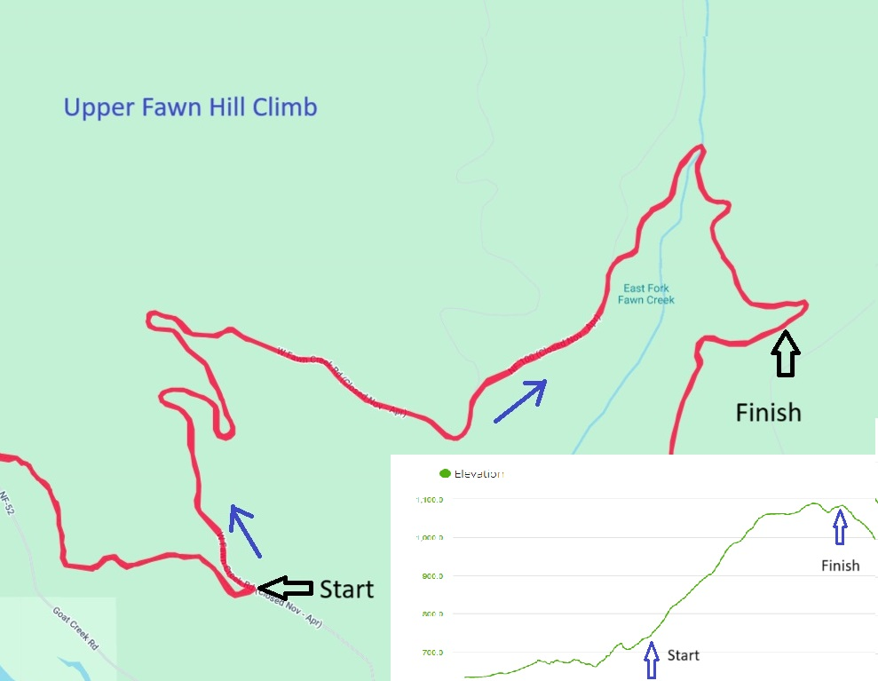

Schedule and Results
See below for schedule and results.
| Date | Location | Technique | Distance | Description | Results |
|---|---|---|---|---|---|
| January 3, 2025 | Chickadee Trailhead | Skate | 7.5 km | From Chickadee up Thompson, Right on Overland Left on Little Wolf Right to homestead, through homestead and onto Lower Fox Counterclockwise on Lower Fox back to Little Wolf Left on Little Wolf Left towards homestead Quick right on Yellow Jacket Finish back at Chickadee. | |
| January 10, 2025 | Chickadee Trailhead | Classic | 8.1 km | From Chickadee up Thompson, Right on Little Wolf, Counterclockwise around Aqua, back on Little Wolf to finish back at Chickadee. | |
| January 17, 2025 | No race this week | ||||
| January 24, 2025 | Brown's Farm | Skate | 6.5 km | This is a great prep for the Ski to the Sun Marathon as it covers the S2S course section from Brown's Farm through the hills towards Wolf Ridge: Start directly in front of the trail map at Brown's Farm trailhead, follow community trail for 6.5 km until the gate crossing just before crossing Wolf Ridge Rd. Finish is where the trail passes through the fence on either side. | |
| January 31, 2025 | Brown's Farm | Classic | 6.5 km | Exact repeat of last week, but with classic technique. | |
| Feb 7, 2025 | No race this week. Ski to the Sun tomorrow. | ||||
| Feb 14, 2025 | Barnslee and Bitterbrush | Skate | 6.6 km | Start is at Gate on Winthrop Trail just near the start of Barnsley Lake loop. Follow full Barnsley loop counter-clockwise including lollypop, staying right. Continue right onto the Bitterbrush loop, completing BB also in counter-clockwise direction. Continue all the way to end of the loop, back towards the start, but bypassing the Start gate straight on through to repeat the Barnsley loop exactly as before, but instead of going right back onto Bitterbrush, head straight back to the start/finish gate to complete the course at the same gate where you started. 6.62km total. See map at bottom of this page. | |
| Feb 21, 2025 | Top of Gunn Ranch | Classic | 6km | This is a rolling course with one steeper section. Start at top of Gunn at intersection of Gunn and Grizzly Way, clockwise on Grizzly Way, Right on Grizzly Mtn Loop, left on Rendezvous Basin, right on Cassal Creek loop -black (this is the climb), Right on Cassal Creek loop -blue, left on Rendezvous Basin, Right at 3-way intersection Rendezvous & Gunn, back to exact start position. See map below. | |
| Sunday, Feb 23, 2025 | ** WMS Up Series ** Thompson Ridge | Skate or CL | ~7 km, 974' vert |
Start at Chickadee to top of Thompson Ridge. See details here. |
|
| Feb 28, 2025 | Fawn hill climb | Skate | 5.9km, 1210' vert | Start at intersection of Lower Fawn & the main West Fawn Creek road. Course follows the main road to the top of the climb, about 3.5 km, then the rolling section to the top of hill before heading down Sick Joke hill. There will be a ribbon hanging from a tree branch signifying the specific finish line. Total climb is roughly 1,000 feet. This is the final Friday am TT. ** Note that Oyuna will be hosting a end of series refrehments get-together at her house not far from the TT start. See main page feb 26 update for more info. See course map & profile below. | |
| Sunday, March 9, 2025 | ** WMS Up Series ** Gunn Ranch to Rendezvous Pass | Skate or CL | ~8 km |
Start at Gunn Ranch Trailhead to Rendezvous Pass See details here. |
Maps
Upper Fawn creek Hill Climb Map & Profile

Grizzly & Cassal map

Barnsley/Bitterbrush course maps
Feedback
Don't forget to report your race times, questions, or comments and requests MVTT Results. There will be a season ender party TBD.